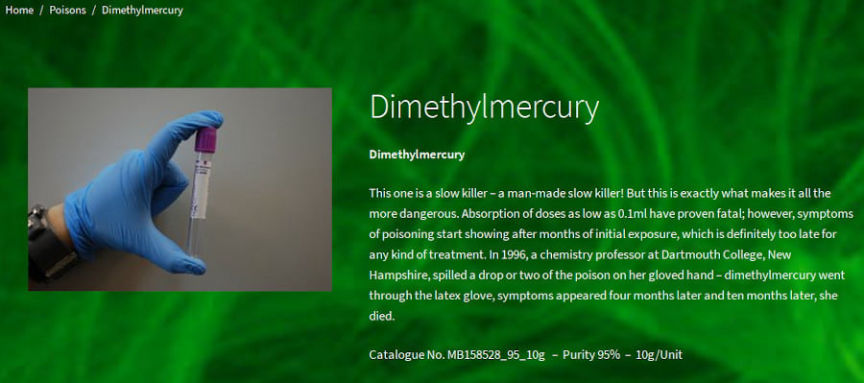
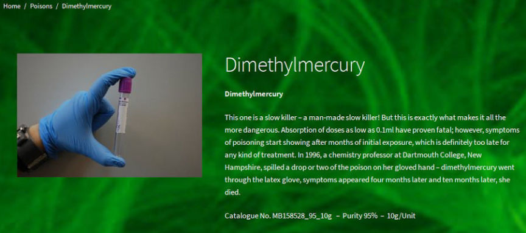

Missouri Man Tried to Buy Chemical Weapons on the Darkweb
~5 min read | Published on 2020-08-12, tagged General-News using 1011 words.
Jason William Siesser of Columbia, Missouri, admitted attempting to purchase a chemical weapon from a vendor on the darkweb on two occasions. The quantity of the chemical weapon ordered by the defendant was capable of killing hundreds of people after months of suffering, court documents said.
The government redacted the name of the specific chemical from all publicly available court documents. In past cases, law enforcement explained that such redaction functions to preserve the integrity of an ongoing investigation. The knowledge that Siesser had attempted to purchase dimethylmercury could result in the identification of an undercover law enforcement officer posing as a darkweb vendor. The overwhelming majority of chemical weapon vendors on the darkweb are either undercover law enforcement officers or fraudsters.
On July 4, 2018, the defendant ordered two ten milliliter units of dimethylmercury from a darkweb weapons vendor on an undisclosed onion service. No mainstream markets allow vendors to sell chemical weapons but some onions explicitly advertise poisons. An example is Poison Shop, a site that once advertised toxic chemicals. Even onion.live marked the site as a scam. Poison Shop was the only indexed onion service that listed dimethylmercury in 2018, according to the various onion service search engines. The one other indexed advertisement for the chemical is a post on an Tor-based imageboard. The post directed users interested in purchasing a poison to contact a Telegram account.

When completing his transaction on the undisclosed darkweb site, Siesser provided the vendor with the address of a juvenile as his shipping address. At the time, Siesser worked at a group home that housed juveniles under contract with the State of Missouri. The name and address Siesser had given to the vendor belonged to one of the juveniles in his care.
The defendant continued to contact the vendor. On July 18, Siesser told the vendor he “plan[ned] to use it soon after receiv[ing] it.” After realizing the vendor never mailed his package of dimethylmercury vials, Siesser ordered three more 10-milliliter vials of dimethylmercury from the same vendor. On August 5, 2018, he transferred $150 in Bitcoin to the vendor and provided the vendor with the juvenile’s shipping address and name.
On August 23, 2018, the Federal Bureau of Investigation likely outed themselves as the vendor by conducting a controlled delivery of an inert substance. At 1:11 pm, Siesser signed for the package. Law enforcement observed him ventilate his house by leaving at least one door open. At 1:43 pm, law enforcement executed a search warrant at the home.
As law enforcement executed the search warrant, Siesser came to the front door after officers knocked and announced their presence. Siesser was detained and asked if there was anything that would harm officers. Siesser stated that there was a quantity of acid and powder in the garage on the top shelf. When asked about the package that had just been delivered, Siesser said that he did not know what the agent meant. Siesser stated that he had just had a speaker delivered and that the speaker was on the shelf with the acid and powder. Siesser was then transported to the Columbia Police Department.
During the execution of the search warrant, officers found the following items:
The USPS shipping box delivered at 1:11 pm; A discarded container in which the substance Siesser believed was dimethylmercury was contained; The substance Siesser believed was dimethylmercury; Two boxes containing 10 grams of cadmium arsenide; Approximately 100 grams of cadmium metal; Aproximately 500 ml of hydrochloric acid. Writings that expressed Siesser’s heartache and anger over a breakup. In the writings, Siesser wrote that he wished the cause of his heartache would die.
[img=]Hmm | Hidden Answers[/img]
Court documents contained examples of Siesser’s writings, including the excerpt below:
“I wish I’d never met you but now it’s not too late. The things you’ve taught me showed me a new kind of love. Our early ending was all wrong. You discarded me like trash but look at how I got strong. Now that I see you just for what you are I know better. I still have the scar Someday I’ll find you and make your day. The darkness that consumes me will overflow one day. You were there to teach me something I already knew Now it’s my turn to teach you a lesson filled with pain Your life is forfeit, flushed down the drain.”
As law enforcement searched the residence, different officers located and interviewed the juvenile in Siesser’s care. During the interview, investigators learned that Siesser had informed the juvenile that “he was in the military and that he wanted to be an Assassin.” Siesser also told the juvenile that he wanted to kill those that have wronged him and that he wanted to kill his former partner from the Netherlands.
At the Columbia Police Department, Siesser waived his Miranda rights during an interview with investigators. He admitted he had purchased three vials of dimethylmercury from a site on the darkweb for $52 worth of Bitcoin per vial. Siesser admitted that he had used the name of the juvenile in his care to prevent law enforcement from linking Siesser to the purchase. Siesser explained that he had previously attempted to purchase dimethylmercury from a legitimate chemical vendor. The vendor canceled the transaction after learning Siesser lacked the license required to possess dimethylmercury.
The FBI noted that Siesser had written several stories about men committing violence or killing their ex-girlfriends and that he had lived with his ex-wife in the Netherlands until they split up. They identified the former partner as a possible victim of Siesser plans. In one court document, the FBI pointed out that Siesser was in the process of purchasing a $100,000 life insurance policy for his 72-year-old father, making the father a possible target as well.
On August 4, 2020, the defendant pleaded guilty before U.S. Magistrate Judge Willie J. Epps, Jr. to one count of attempting to acquire a chemical weapon and one count of aggravated identity theft. The chemical weapon charge carries a mandatory minimum sentence of five years in federal prison. It comes with a statutory maximum penalty of life in prison without parole.
Plea Agreement: PDF
The government redacted the name of the specific chemical from all publicly available court documents. In past cases, law enforcement explained that such redaction functions to preserve the integrity of an ongoing investigation. The knowledge that Siesser had attempted to purchase dimethylmercury could result in the identification of an undercover law enforcement officer posing as a darkweb vendor. The overwhelming majority of chemical weapon vendors on the darkweb are either undercover law enforcement officers or fraudsters.
On July 4, 2018, the defendant ordered two ten milliliter units of dimethylmercury from a darkweb weapons vendor on an undisclosed onion service. No mainstream markets allow vendors to sell chemical weapons but some onions explicitly advertise poisons. An example is Poison Shop, a site that once advertised toxic chemicals. Even onion.live marked the site as a scam. Poison Shop was the only indexed onion service that listed dimethylmercury in 2018, according to the various onion service search engines. The one other indexed advertisement for the chemical is a post on an Tor-based imageboard. The post directed users interested in purchasing a poison to contact a Telegram account.

Poison Shop actually looked like this
When completing his transaction on the undisclosed darkweb site, Siesser provided the vendor with the address of a juvenile as his shipping address. At the time, Siesser worked at a group home that housed juveniles under contract with the State of Missouri. The name and address Siesser had given to the vendor belonged to one of the juveniles in his care.
The defendant continued to contact the vendor. On July 18, Siesser told the vendor he “plan[ned] to use it soon after receiv[ing] it.” After realizing the vendor never mailed his package of dimethylmercury vials, Siesser ordered three more 10-milliliter vials of dimethylmercury from the same vendor. On August 5, 2018, he transferred $150 in Bitcoin to the vendor and provided the vendor with the juvenile’s shipping address and name.
On August 23, 2018, the Federal Bureau of Investigation likely outed themselves as the vendor by conducting a controlled delivery of an inert substance. At 1:11 pm, Siesser signed for the package. Law enforcement observed him ventilate his house by leaving at least one door open. At 1:43 pm, law enforcement executed a search warrant at the home.
As law enforcement executed the search warrant, Siesser came to the front door after officers knocked and announced their presence. Siesser was detained and asked if there was anything that would harm officers. Siesser stated that there was a quantity of acid and powder in the garage on the top shelf. When asked about the package that had just been delivered, Siesser said that he did not know what the agent meant. Siesser stated that he had just had a speaker delivered and that the speaker was on the shelf with the acid and powder. Siesser was then transported to the Columbia Police Department.
During the execution of the search warrant, officers found the following items:
[img=]Hmm | Hidden Answers[/img]
Court documents contained examples of Siesser’s writings, including the excerpt below:
“I wish I’d never met you but now it’s not too late. The things you’ve taught me showed me a new kind of love. Our early ending was all wrong. You discarded me like trash but look at how I got strong. Now that I see you just for what you are I know better. I still have the scar Someday I’ll find you and make your day. The darkness that consumes me will overflow one day. You were there to teach me something I already knew Now it’s my turn to teach you a lesson filled with pain Your life is forfeit, flushed down the drain.”
As law enforcement searched the residence, different officers located and interviewed the juvenile in Siesser’s care. During the interview, investigators learned that Siesser had informed the juvenile that “he was in the military and that he wanted to be an Assassin.” Siesser also told the juvenile that he wanted to kill those that have wronged him and that he wanted to kill his former partner from the Netherlands.
At the Columbia Police Department, Siesser waived his Miranda rights during an interview with investigators. He admitted he had purchased three vials of dimethylmercury from a site on the darkweb for $52 worth of Bitcoin per vial. Siesser admitted that he had used the name of the juvenile in his care to prevent law enforcement from linking Siesser to the purchase. Siesser explained that he had previously attempted to purchase dimethylmercury from a legitimate chemical vendor. The vendor canceled the transaction after learning Siesser lacked the license required to possess dimethylmercury.
The FBI noted that Siesser had written several stories about men committing violence or killing their ex-girlfriends and that he had lived with his ex-wife in the Netherlands until they split up. They identified the former partner as a possible victim of Siesser plans. In one court document, the FBI pointed out that Siesser was in the process of purchasing a $100,000 life insurance policy for his 72-year-old father, making the father a possible target as well.
On August 4, 2020, the defendant pleaded guilty before U.S. Magistrate Judge Willie J. Epps, Jr. to one count of attempting to acquire a chemical weapon and one count of aggravated identity theft. The chemical weapon charge carries a mandatory minimum sentence of five years in federal prison. It comes with a statutory maximum penalty of life in prison without parole.
Plea Agreement: PDF